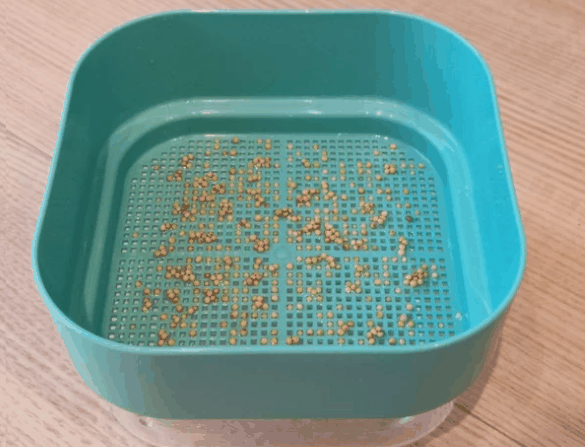
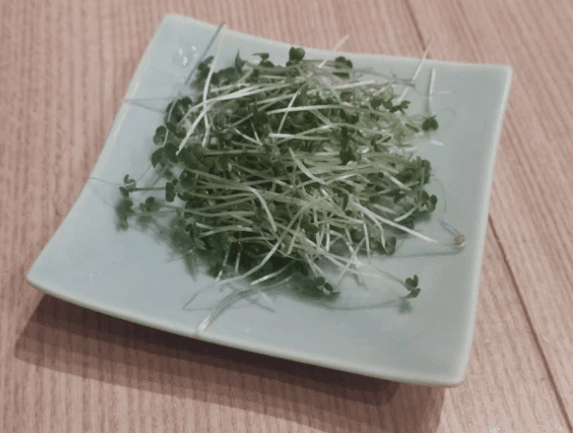
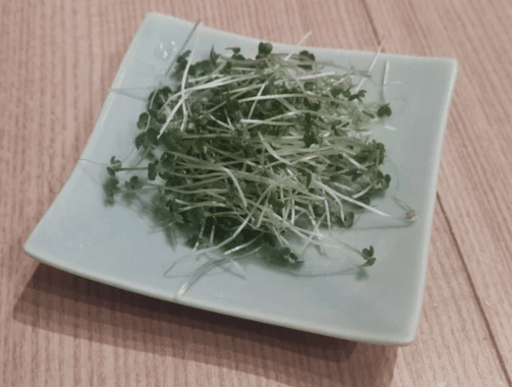

ダイソー「スプラウトを育てる容器」でスプラウトを育てる
本記事では、ヘルシーで栄養価の高い食材である、スプラウトを育てる方法を紹介します！
サラダに、サンドイッチに、一味加えるのにピッタリです。
代表的なのはブロッコリースプラウトかと思いますが、今回はマスタードスプラウトを試してみました。
種まきから収穫までの時間が早く、光の入らないキッチン脇でも育てることができるので、是非試してみてください。
0. 用意するもの
今回は、ダイソーで100円で売っている「スプラウトを育てる容器」を使用します。
カビなどが発生しにくく、手入れも楽なので使いやすいです。
- ダイソー「スプラウトを育てる容器」
- 種

スプラウトの種は楽天の以下で買うと、好きな種が選べてしかも送料無料なのでお勧めです！
1. 容器を綺麗にする
スプラウト育成は雑菌が一番の敵です。
使用する前にしっかり洗います。
できれば食用品向けの消毒スプレーなどで消毒すると良いです。
2. 下の容器に種を入れて水に浸す
下側の透明な方の容器に種を出して、半日ほど水に浸します。
種の量は、多すぎると育ちが悪くなりますので、気持ち少なめくらいが良いと思います。

3. 上の容器に種を出して下の容器に水を入れる
水に浸した種を上側の容器に出して、平らに並べます。
下側の容器に水をいれ、上と下を合体させます。
入れる水の量は、合体させたときに水が上の容器に触れるくらいにします。
その後はアルミホイルを巻いたり、手ぬぐいを置いたりして遮光します。

4. 成長を見守る
一日一回水を変えつつ、成長を見守ります。
根っこが伸びてきたら、根っこが半分浸かるくらいの水の量に減らしていきます。

１週間くらいでだいぶ成長するので、光を当てて緑化します。
 



5. 収穫する
1-2日光をあてて、緑色になったら収穫します。
採りたては新鮮でおいしいです！
ほんとにマスタードのピリッとした味がするので、面白いですよ。

最後に
スプラウトは、種まきから収穫までが短く、だいたい１週間くらいで収穫できます。
育っていく様が目に見えるのが自分で育てる醍醐味ですね。
スプラウトにはいろいろな種類があります。
めずらしいスプラウトの種も売っていますので、試しに育ててみて味を比べてみるのも楽しいかもしれませんね。
 (twitter)でも水耕栽培を投稿していますので、良かったらフォローお願いします！
(twitter)でも水耕栽培を投稿していますので、良かったらフォローお願いします！
アルファルファスプラウト収穫！もりもり食べよ。 pic.twitter.com/esAORfahng
— YU＠水耕栽培やってます (@UrbanVegeOasis) March 12, 2024
レッドキャベツスプラウト7日目。
— YU＠水耕栽培やってます (@UrbanVegeOasis) December 28, 2023
なんか魔界に生えてそうな色してる・・。 pic.twitter.com/2dm8ZBPQlJ